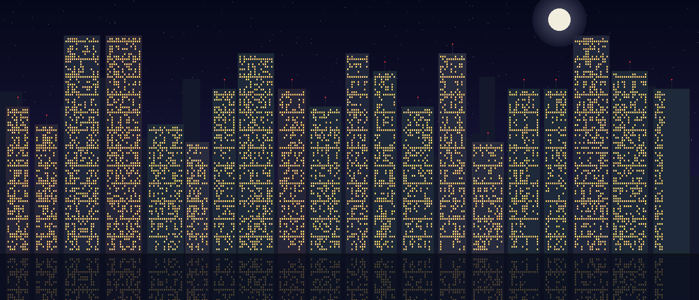

The windows in this city spell out a program. Run that program, and it draws this city. The same one, down to the last pixel.

This is the sequel to Hidden in the Skyline. Same kind of code: every window is lit or dark, two choices each. But this time the message isn't a sentence. It's instructions for a computer, and the instructions are for drawing… this.
Hint: read each building's window columns from left to right, each column from the top down. Seven windows make one letter.
Lit window = 1, dark window = 0. Every 7 windows down a column is one letter of plain computer text (ASCII):
1110011 is s, 0100000 is a space, 0111101 is =. 17,094 windows make
2,336 letters, and those letters are a 60-line Python program. The last building is mostly dark: that's where the program ends.
The text below was just read out of the picture by your own device, window by window, not copied from a file.
Reading the windows…
Want to run it? Save it as city.py (or grab city.py), then
pip install pillow and python city.py. It writes city.png: this picture.
We ran the loop on our own computer (November 23, 2026; Python 3.12, Pillow 12.2):
city.png.city.py exactly, every character.city.png.Fingerprint (SHA-256) of the picture, before and after:
9028a3d45819737c912f5a3bea570540a1526826675b1c82c4574fca6b1d33d8
Fingerprint of the program, and of the text read out of the windows:
a56cccf4753f42807f3a170837e34a6c86d4174c31f1ca19d651b3ce6f223307
Run the whole loop yourself with prove.py. With a different Pillow version the picture's file fingerprint can change (Pillow packs PNG files its own way); the pixels should not.
A program that prints its own text is called a quine. The trick is that it never reads its own file. It carries a copy of its own instructions as a piece of text, and rebuilds its full self from that copy: "here is the text, plus the two lines that wrap it." This one goes a step further: instead of printing itself, it turns its own letters into lit and dark windows, then builds the city around them. How many buildings there are comes from how long the program is.
The hard part: any change to the drawing code changes the windows, which changes the code the windows spell. The trick above is what keeps that from going around in circles forever.